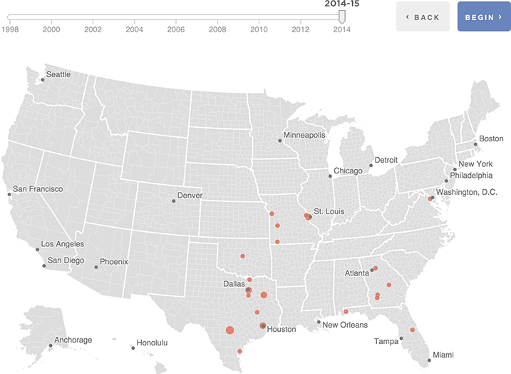

{% extends 'base_template.html' %}
{% block content %}

    {% if COPY.labels.headline %}<h1>{{ COPY.labels.headline }}</h1>{% endif %}
    {% if COPY.labels.subhed %}<h2>{{ render(COPY.labels.subhed) }}</h2>{% endif %}

    <div id="loading">
        <p>&nbsp;Loading</p>
    </div>

    <div class="btns">
        <div class="btn" id="btn-back"><span>&lsaquo;</span>&nbsp;Back</div><div class="btn" id="btn-next">Next&nbsp;<span>&rsaquo;</span></div>
    </div>
    <div id="slider"></div>
    <div id="locator-map" class="graphic">
        
    </div>

    {% if COPY.labels.footnote %}
    <div class="footnotes">
        <h4>Notes</h4>
        <p>{{ COPY.labels.footnote }}</p>
    </div>
    {% endif %}

    <div class="footer">
        {% if COPY.labels.source %}<p>Source: {{ COPY.labels.source }}</p>{% endif %}
        {% if COPY.labels.credit %}<p>Credit: {{ COPY.labels.credit }}</p>{% endif %}
    </div>

    {% if COPY.labels.codeMode %}
    <script type="text/javascript">
        var DATA = {{ COPY.cleaned_2yr.json() }};
    </script>
    {% endif %}

{% endblock content %}

{% block js %}

    {{ JS.push('js/lib/underscore.js') }}
    {{ JS.push('js/lib/d3.min.js') }}
    {% if COPY.labels.codeMode %}
        {{ JS.push('js/lib/d3.geo.projection.v0.min.js') }}
        {{ JS.push('js/lib/topojson.v1.min.js') }}
    {% endif %}
    {{ JS.push('js/lib/modernizr.svg.min.js') }}
    {{ JS.push('js/lib/pym.js') }}
    {{ JS.push('js/base.js') }}
    {% if COPY.labels.codeMode %}
        {{ JS.push('js/graphic-code.js') }}
    {% else %}
        {{ JS.push('js/graphic-static.js') }}
    {% endif %}
    {{ JS.render('js/graphic-footer.js') }}

{% endblock js %}
